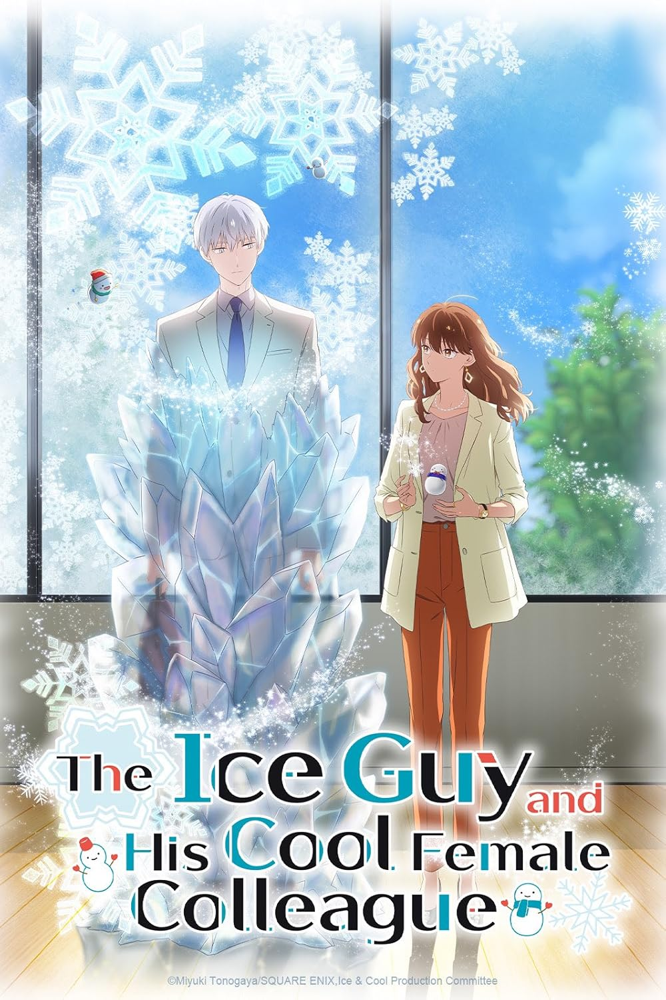
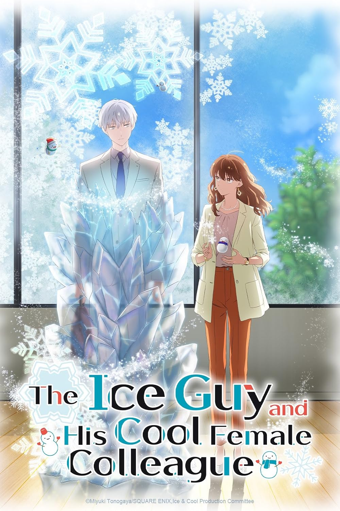
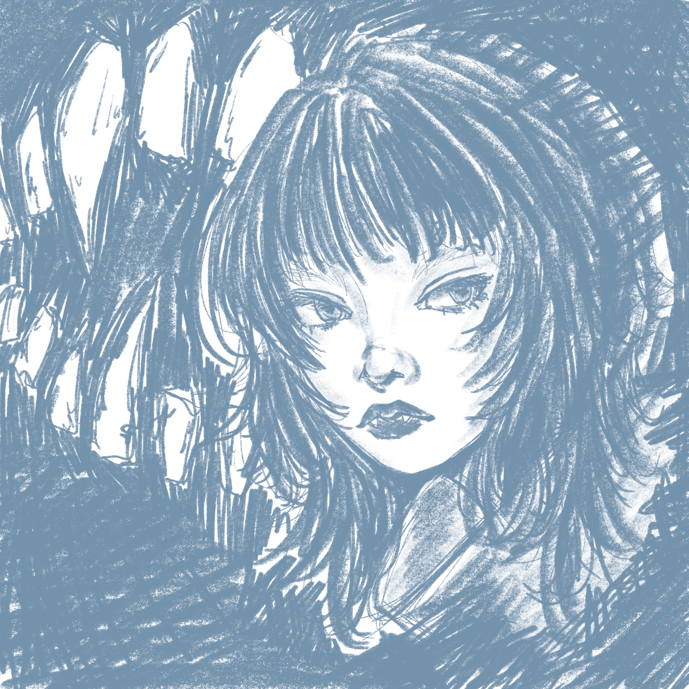
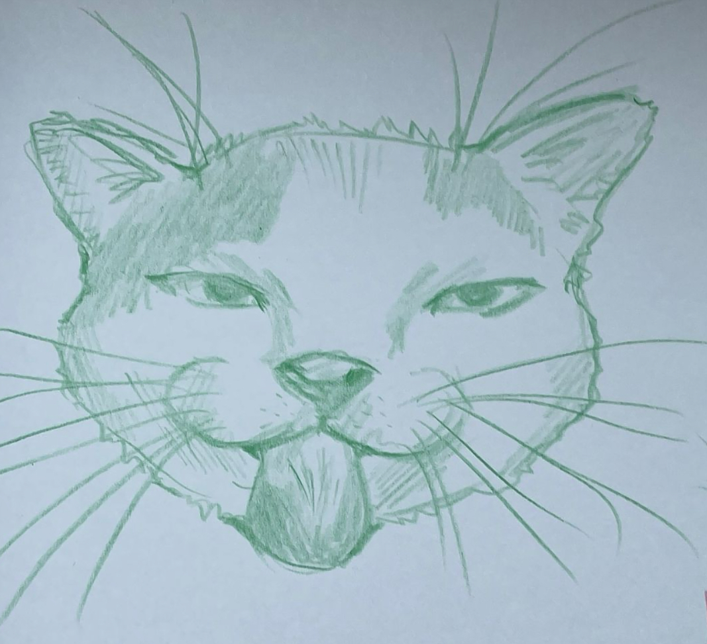
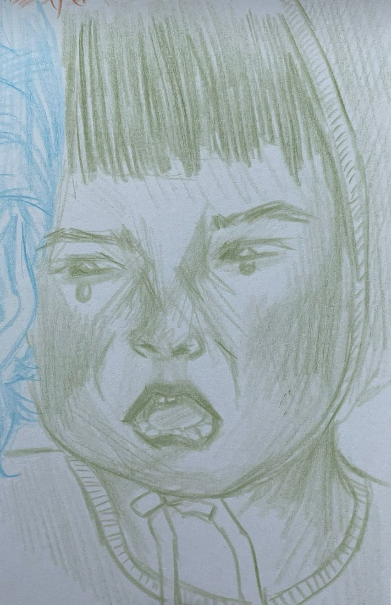

My Hobbies
-
Anime Favorites
I enjoy a good anime here and there. I get inspired by the art styles and animation aspects!

 
 -
Felt Projects
This year I took up crafting felt projects. So far I've created photobooth photo frames and polaroid frames. I'm excited to create other items like wallets, keychains, and photobooks!

-
Games
Outside of studying, I like to play video games with my friends. I especially enjoy fps (first-person shooter) games!


-
Illustrations
I've been drawing ever since I was a little kid. I've tried many mediums, most of my recent artworks have been digital.
  